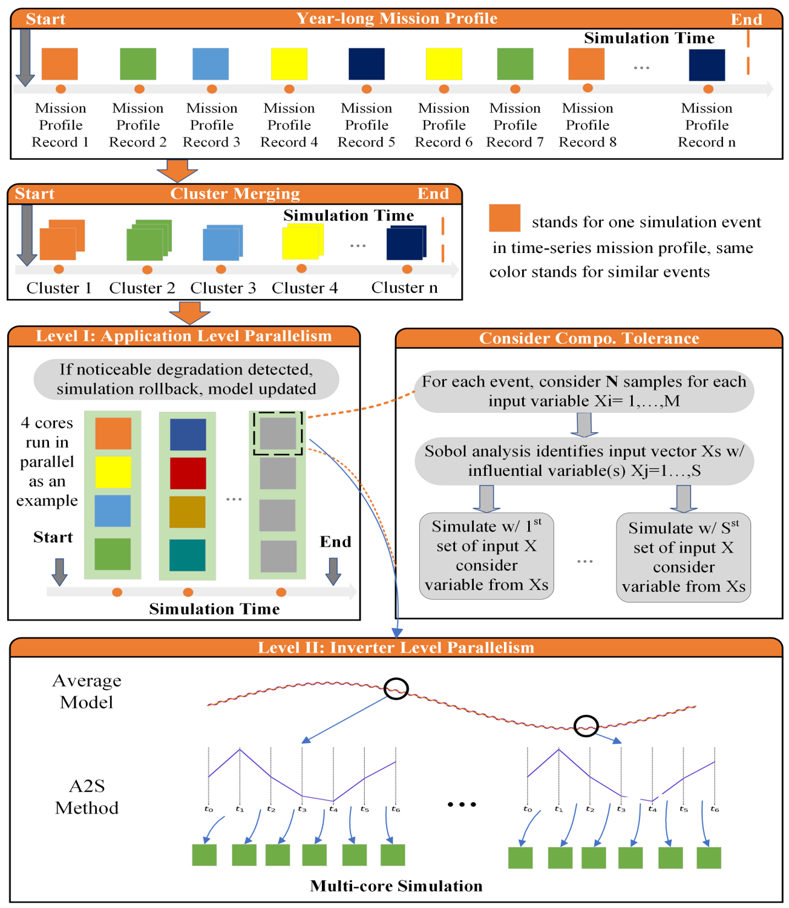

Welcome to
High-performance computing (HPC)-empowered power electronics modeling and simulation

Details
- Developing first HPC framework for physics-of-failure-based power electronics reliability assessment
- Introducing two-level parallelism and Average-to-Switching (A2S) method for efficient, accurate large-scale simulations
- Applying sample-reduced uncertainty quantification and dynamic degradation models for realistic lifetime predictions
- Demonstrating massive speedup (years to minutes), validated with field data
Publications
C. Wagner, Y. Li, S. Jin, Z. Zhang, and C. Edrington, “Fast and scalable simulation framework for intensive power electronics simulation through advanced computing techniques,” in Journal of Electronics and Electrical Engineering, early access.
Link, Paper
A. Moghassemi, L. Timilsina, S. M. I. Rahman, A. Arsalan, G. Muriithi, E. Buraimoh, G. Ozkan, B. Papari, C. S. Edrington, Z. Zhang and P. K. Chamarthi, “Real-time improved nearest level control for power electronics building blocks in all-electric ship power systems,” in IEEE Transactions on Industry Applications, early access.
Link, Paper
R. Singh, P. Paniyil and Z. Zhang, “Transformative role of power electronics: in solving climate emergency,” in IEEE Power Electronics Magazine, vol. 9, no. 2, pp. 39-47, June 2022.
Link, Paper
A. Moghassemi, L. Timilsina, S. M. Imrat, A. Arsalan, P. K. Chamarthi, G. Ozkan, and Z. Zhang, “Nearest level control based modular multi-level converters for power electronics building blocks concept in electric ship system,” IEEE Transportation Electrification Conference and Expo (ITEC), Chicago, IL, USA, 2024, pp. 1-6.
Link, Paper
Y. Li, Z. Zhang, S. Jin, and C. S. Edrington, “Accelerating switching model-based simulation through parallel computing,” in Proc. IEEE Energy Conversion Congress and Exposition, Oct.-Nov. 2023, pp. 2771-2775.
Link, Paper
S. Amara, Y. Li, C. Wagner, S. Jin, Z. Zhang and C. Edrington, “High-performance computing-based fast virtual prototyping of power electronics converters for ground vehicle powertrain systems,” 2023 North American Power Symposium (NAPS), Asheville, NC, USA, 2023, pp. 1-6.
Link, Paper